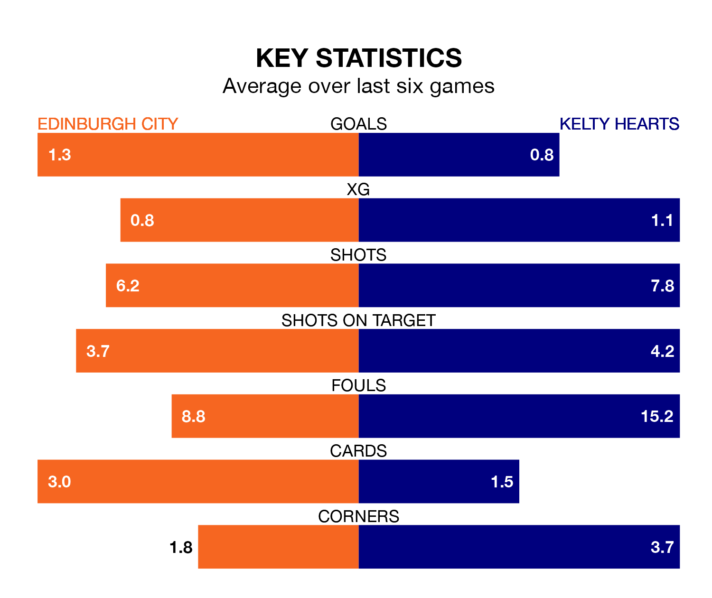

Saturday's match at the Meadowbank Stadium sees two relegation candidates play each other, as bottom of the table Edinburgh City host eighth-placed Kelty Hearts.
Edinburgh have picked up 10 points from their first 10 League One games, with two wins and four draws.
That is 14 points less than Kelty Hearts have collected, having won six and drawn six.
Edinburgh are in terrible form in League One, with no wins and a draw from their last six games.
With no wins and three draws over that period, Kelty Hearts's form is slightly better – they have taken three points from 18, compared to City's one.
In the last 10 years, Edinburgh and Kelty Hearts have played each other on 10 occasions. Edinburgh won three of them, Kelty Hearts four, and they drew three times.
On average, Edinburgh scored 1.7 goals and Kelty Hearts 1.9 in those matches.
Their last meeting was on October 7, when Kelty Hearts won 4-1 away.
With 27 goals in 21 games so far this season, the hosts are scoring at below the league average rate with 1.3 goals per game. And they are conceding more than average, letting in 59 goals at a rate of 2.8 per game.
The away side are also below average scorers, with 1.4 goals per game, compared to a league average of 1.5. They have conceded 1.6 goals per game.
In Robert Mahon, Edinburgh have one of the league's most on-form strikers so far this season. He has notched seven goals in 16 appearances, to sit fifth in the scoring charts.
Kelty Hearts's top scorers, with four goals each, are Lewis Moore, Alfie Bavidge and Reece Lyon.
Edinburgh's last match was on January 27, a 3-0 loss against Annan Athletic.
Kelty Hearts lost 5-0 against Stirling Albion last time out, also on January 27.
Updated: 10:40 (UTC), 01/02/24